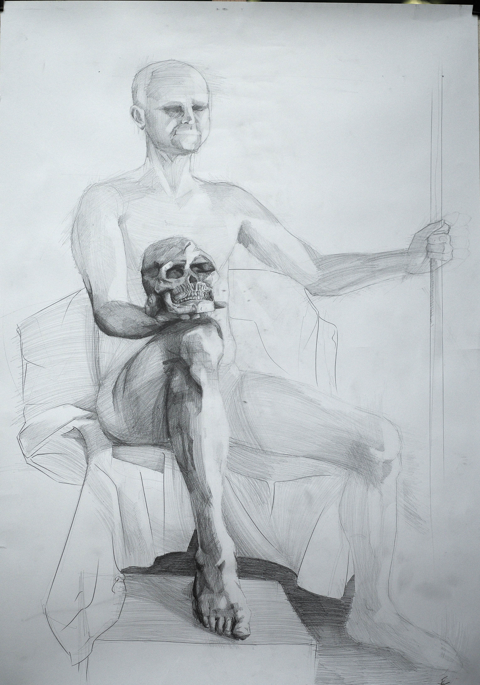
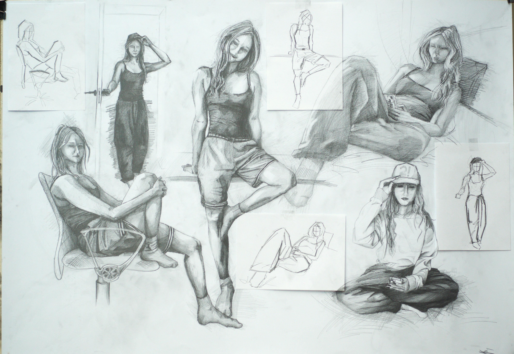
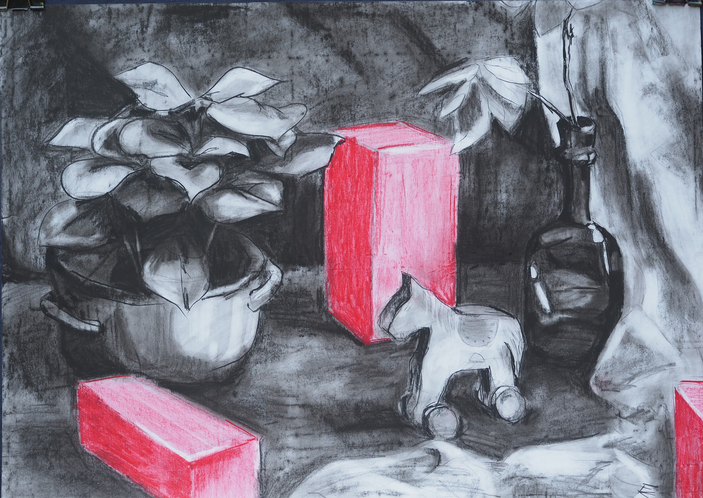
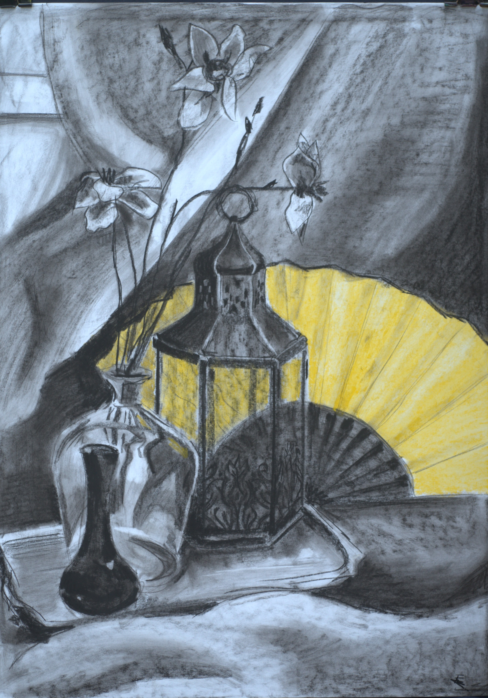
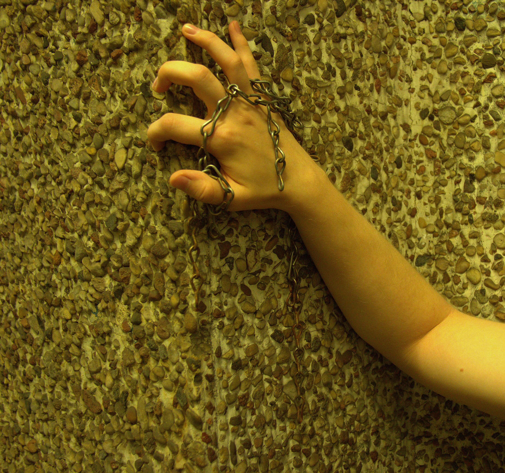

Moje rysunki i kadry
Rysunek to dla mnie podstawa rzemiosła artystycznego, w którym skupiam się na studium anatomii i światłocienia. Z kolei fotografia pozwala mi na szybkie rejestrowanie geometrii otaczającego nas świata. Poniżej znajduje się zestawienie moich najnowszych prac.

akt z czaszką (Szkic ołówkiem)

Plansza szkiców (Szkic ołówkiem)

martwa węglem (Szkic - Unsplash)

martwa weglem 2 (Fotografia)

Ciało (Fotografia)